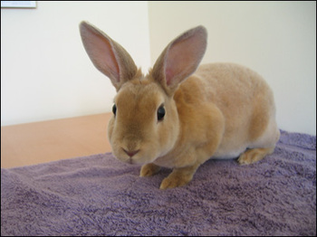

กระต่ายมินิลอป (Mini Lop Rabbit)

กำเนิดมินิลอปตัวแรกในสหรัฐฯ ซึ่งมีสีทึบ สำหรับรุ่นต่อมาสีของกระต่ายเปลี่ยนเป็นสีแถว ๆ สีน้ำตาล ซึ่งกลายมาเป็นสีมาตรฐานของกระต่ายพันธุ์มินิลอป กระต่ายพันธุ์นี้มีนิสัยขี้เล่นและเป็นกันเอง มันเป็นพันธุ์ที่ฉลาด(เมื่อเทียบกับกระต่ายด้วยกัน) มันสามารถนำมาฝึกได้ มันเข้าใจคำสั่งบางคำสั่งได้ มันชอบการอยู่เป็นครอบครัว
กระต่ายไลอ้อนเฮดท์ (Lion Head)
.jpg)
กระต่ายไลออนเฮดมีถิ่นกำเนิดในประเทศเบลเยียม มีรายงานว่าสายพันธุ์นี้เกิดจากความพยายามที่จะผสมสายพันธุ์ขึ้นมาใหม่ ให้ได้กระต่ายที่แคระและมีขนยาว โดยการผสมพันธุ์ระหว่างกระต่าย Swiss Fox และกระต่ายแคระ ND (เนเธอร์แลนด์) เรื่องนี้ทำให้เกิดการเปลี่ยนแปลงทางพันธุกรรมที่ก่อให้เกิดขนในบริเวณรอบศีรษะและไหล่ ยีนนี้กลายเป็นที่รู้จักในนาม "ยีนแผงคอ" จากนั้น "ยีนแผงคอ" ถูกแยกออกมาจากยีนอื่น ๆ เช่น ยีนขน ยีนสี
กระต่ายไลออนเฮดส่วนใหญ่เป็นสัตว์เลี้ยงที่เป็นมิตรและมารยาทดี มันเป็นสัตว์ที่สามารถฝึกให้มีความสามารถมากขึ้นได้ มันสามารถเข้าใจ "บางคำสั่ง" เช่น "มานี้" หรือ "กิน"
กระต่ายมินิเร็กซ์ (Mini Rex)

มินิเร็กซ์ เป็นกระต่ายขนาดเล็ก ขนนุ่มเหมือนกำมะหยี่ เป็นกระต่ายที่อารมณ์ดี
มินิเร็กซ์เป็นสายพันธุ์กระต่ายที่มาจากฝรั่งเศษในช่วงปลายศตวรรษที่ 19 เกิดการกลายพันธุ์ของกระต่ายพันธุ์เร็กซ์(Rex) ทำให้รูปร่างผิดไปจากเดิม
เนื่องจากมินิเร็กซ์มีขนาดเล็กและมีความเป็นมิตรทำให้มันเป็นหนึ่งในสายพันธุ์กระต่ายที่นิยมที่สุดในสหรัฐฯ มินิเร็กซ์ถูกขึ้นทะเบียนโดย ARBA ในปี ค.ศ. 1988 และจากนั้นมันเป็นกระต่ายที่ผู้คนส่งเข้าประกวดเป็นจำนวนมาก เมื่อโตเต็มที่มินิเร็กซ์จะมีน้ำหนักประมาณ 1.6-2.0 กิโลกรัม มีขนค่อนข้างสั้น เงางาม ขนกำมะหยี่ โดยเฉลี่ยขนจะยาว 1.56 เซนติเมตร